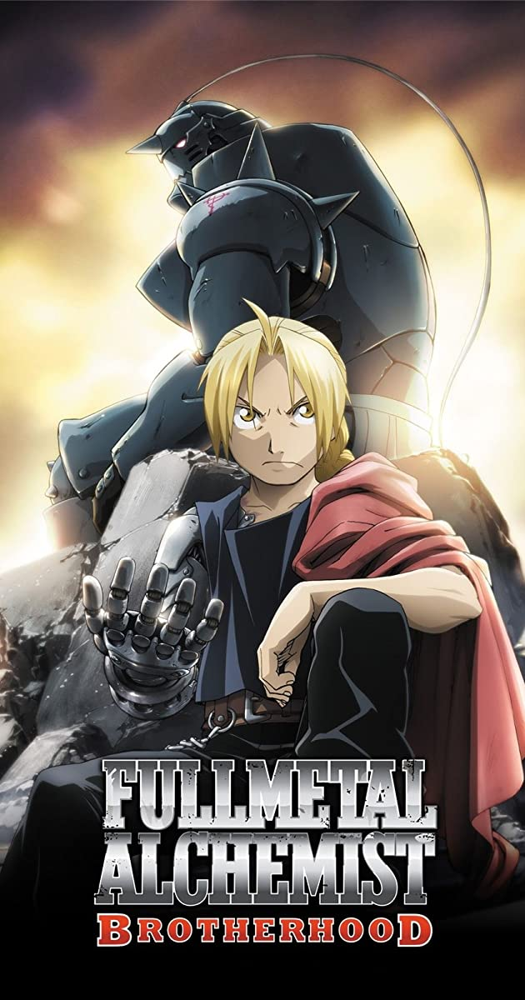

Anime
Se refere à animação ou desenho animado. Para os ocidentais, a palavra se refere às animações oriundas do Japão.Ao contrário do que muitos pensam, o animê não é um género, mas um meio, e no Japão produzem-se filmes animados com conteúdos variados, dentro de todos os géneros possíveis e imagináveis
Fonte: Winkipédia
Brothers Edward and Alphonse Elric are raised by their mother Trisha Elric in the remote village of Resembool in the country of Amestris. Their father Hohenheim, a noted and very gifted alchemist, abandoned his family while the boys were still young, and while in Trisha's care they began to show an affinity for alchemy and became curious about its secrets. However, when Trisha died of a lingering illness, they were cared for by their best friend Winry Rockbell and her grandmother Pinako.
 Fullmetal Alchemist Brotherhood